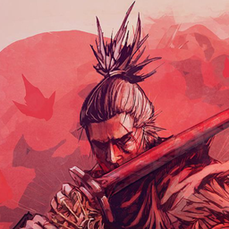

Jairo Herrera Romero
狼 SHINOBI
Ashina Sanctuary • 葦名一門
"A shinobi would know the difference between honor and victory."
✕
体力 • VITALITY (CPU)
12%
体幹 • POSTURE (RAM)
4.2 / 15.3 GB
Spirit Link (Wi-Fi)
Connecting...
回生
Resurrection
100%
Wi-Fi
Active
Bluetooth
On
Terminal
Alacritty
🌐
Browser
Brave
📁
Files
Nautilus
⚡
Editor
VS Code
🔇
Mute
Audio
⛩
Close
Esc
50%
70%
🌸
Quiet Sanctuary
Sekiro: Shadows Die Twice OST
⏮
▶
⏭
🔒
瞑想
LOCK
🚪
離脱
LOGOUT
🔄
再起
REBOOT
⏻
切腹
SHUTDOWN